Three ways to build a deck, and an AI one that says only what the paper says
IA@UNIPG · Incontro 3, Ricerca e IA · Lab 3 SSH, Scrittura accademica e presentazioni · Centro Linguistico di Ateneo
29 September 2026
Niccolò Salvini, PhD · Adjunct Professor
| 0–12 | Three ways to build a deck | PowerPoint · LaTeX Beamer · HTML |
| 12–16 | Gemini Notebook in one minute, round 1 | one source, one prompt |
| 16–30 | Tricks, while deck 1 is generating | citations, rules, the real picture |
| 30–33 | Round 2 | more sources, the UNIPG theme |
| 33–50 | Check the theme, Rivedi slide by slide, export | one slide, one instruction |
| 50–55 | Three rules to take home |
One article for everyone: Van Ooijen, Resilient Matters: The Cathedral of Syracuse as an Architectural Palimpsest, Architectural Histories, 2019.
| Slides app | LaTeX Beamer | HTML | |
|---|---|---|---|
| You write in | the slide itself | .tex code |
Markdown |
| You get | .pptx → PDF |
a web page | |
| The theme lives in | the master slide | a .sty file |
a .scss file |
| Maths, references | painful | native | good (KaTeX, BibTeX) |
| Video, live charts, maps | video only | almost none | everything a browser shows |
| Good for | quick decks, templates you are given | papers, formulas, conferences in STEM | teaching, interactive material |
Tools: PowerPoint, Keynote, Google Slides · Beamer on Overleaf · Quarto + reveal.js, Slidev, Marp.
This deck is a Markdown file rendered by Quarto into a reveal.js web page.
## You are looking at HTML right now
This deck is a **Markdown file** rendered by...
- a bullet is a dash
- a picture is quarto render deck.qmd → deck.html → open in any browser, or print to PDF.
The look is one file. unipg.scss holds four colours read from unipg.it and one font:
#27348B blue #E30613 red #8D8F95 grey #E8E8E8 light grey Roboto
Change the file, every slide changes. Keep this in mind: in Part 2 we give the same five values to Gemini.
Click to open it live: 49 slides, Markdown + manim + SVG
| What you see | What makes it |
|---|---|
| text, columns, tables | Markdown → Pandoc |
| slides, transitions, speaker view | reveal.js |
| animations | manim (Python) → MP4 |
| charts, diagrams | Python → SVG |
| colours, fonts | one .scss file |
| hosting | GitHub Pages |
A manim animation, embedded as a video
A live map: the Cathedral of Syracuse, today’s article
Also: an interactive chart, a web page, a form, a notebook, a 3D model. In a PDF none of this moves.
\documentclass[aspectratio=169]{beamer}
\usetheme{default} % or the conference .sty
\definecolor{unipg}{HTML}{27348B}
\setbeamercolor{frametitle}{fg=unipg}
\begin{document}
\begin{frame}{Architectural resilience may rely
on continuous adaptation}
\includegraphics[height=.6\textheight]{fig3}
\href{https://doi.org/10.5334/ah.65}{Van Ooijen 2019}
\end{frame}
\end{document}Why people use it: formulas, \cite, the conference asks for it, the output is one stable PDF.
What you can embed: TikZ and pgfplots drawings, code listings, links, step-by-step overlays (\pause, \only), frame-by-frame animation with the animate package.
What you cannot really embed: video, live maps, anything interactive.
Overleaf compiles it in the browser. Many conferences give you a .sty theme: that file is the “theme” we talk about next.
| Route | Where the look lives | What you change for a new conference |
|---|---|---|
| Slides app | slide master / template | open their .potx |
| Beamer | .sty or preamble |
\usetheme{conf} |
| HTML | .scss |
four hex codes and a font |
| Gemini Notebook | the prompt | four hex codes and a font, written in words |
An AI tool has no theme file. The prompt is the theme file.
We work only on what is uploaded. If the model says something and cannot show where it is in the text, for us it does not exist.
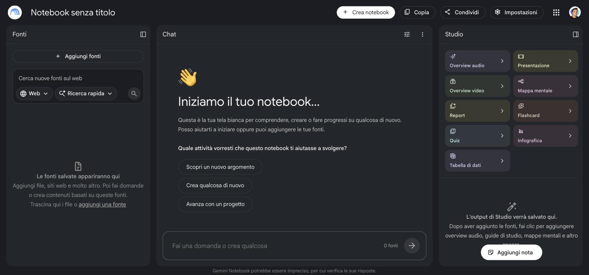
notebook.google.com, with your @unipg.it account.
Before uploading any PDF: select a line, copy it, paste it somewhere.
| On screen | What the machine reads |
|---|---|
| Architectural Histories | $UFKLWHFWXUDO +LVWRULHV |
| Resilient Matters: The Cathedral… | Resilient Matters: The Cathedral… |
That is today’s article: the journal logo is unreadable, the body text is fine.
If the text comes out garbled, the model will still answer, with something plausible. It never says it could not read.
Today: Add source → Websites → paste the direct PDF link:
journal.eahn.org/article/7590/
galley/21444/download/
The article page itself imports badly (menus, cookie banners). The direct PDF link imports clean.
Round 1
Sources: the article, nothing else
Prompt B: content rules. Only what is in the text, titles as claims, keep the author’s caution, no generated images, last slide = limits.
→ deck 1
Round 2
Sources: the article + deck 1 (if it passed the check) + real photos of the cathedral
Prompt C: B + keep deck 1’s structure + use only the uploaded photos + the UNIPG theme.
→ deck 2
One change per round. The third generation of the day stays in your pocket. Deck A, the one-line prompt, you only see on my screen: no need to spend a generation on it.
3
presentations per account per day, measured this morning on @unipg.it
niccolosalvini.github.io/unipg_ai_workshop
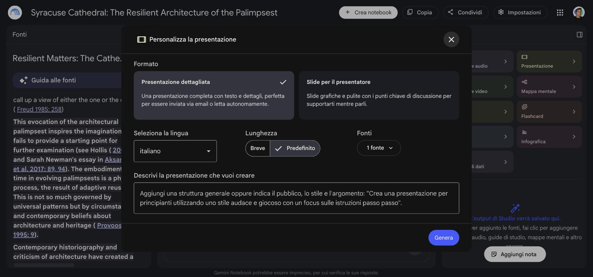
1 Format: Presenter slides, the right-hand card
2 Language: English
3 Sources: only the article
4 Paste prompt B → Genera
The dialog forgets format and language every time. Check them before Genera.
Then close it. Don’t watch the spinner: 7 minutes of tricks start now.
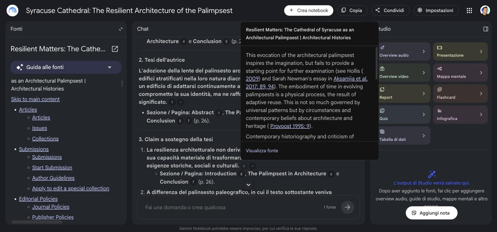
In the chat, every sentence carries a number. Click it: the passage of the article opens.
If the passage says less than the sentence, the sentence does not go on a slide.
Ask in chat: “What are the three claims the thesis rests on? Cite the page for each.” Then click every number.
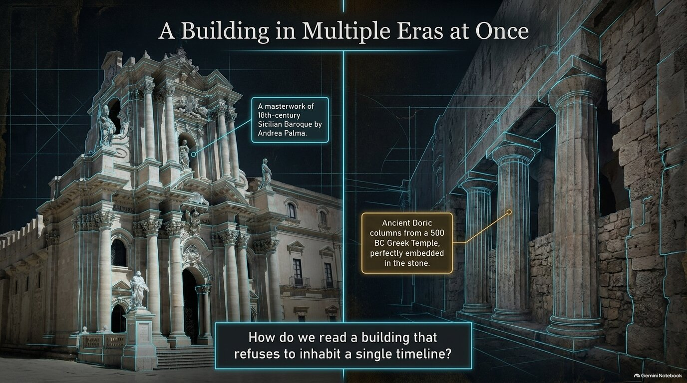
The captions are right: 500 BC, Andrea Palma, 18th-century Baroque are all in the article.
The picture is not. It is a generated cathedral: a document of a building that does not look like that.
In a talk, a generated photo of a real place reads as evidence.
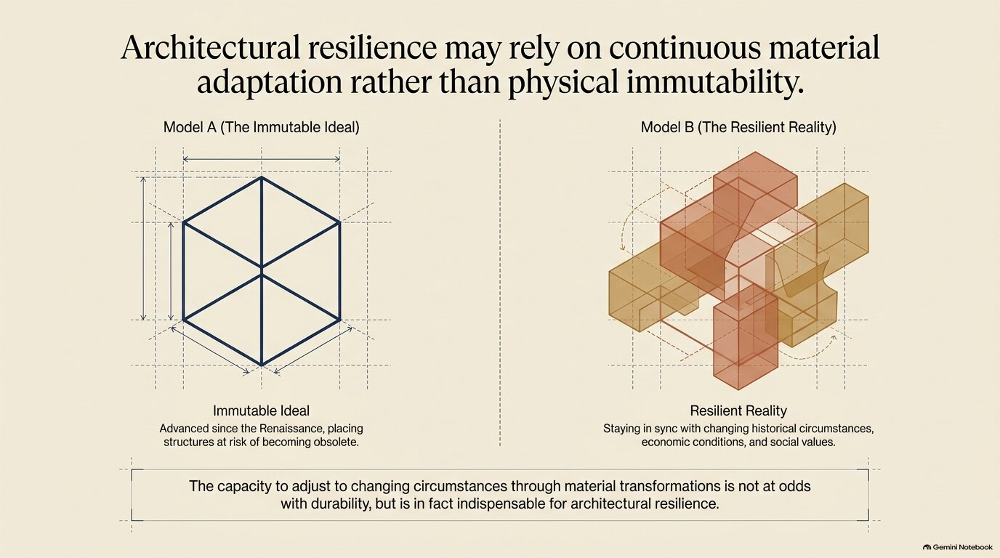
Same article, same tool, ten more lines of prompt.
Prompt B, @unipg.it account, 08:27
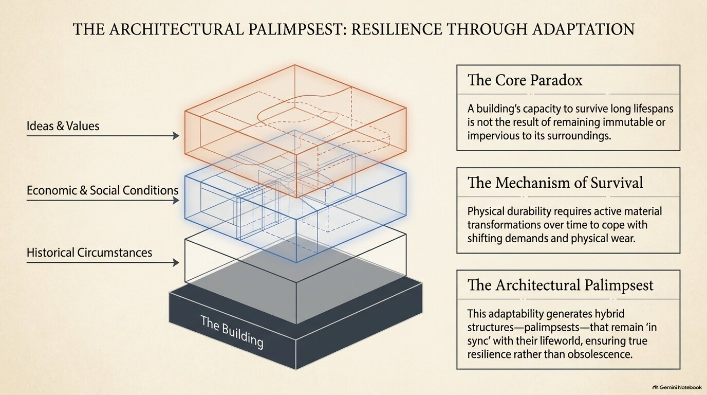
Prompt B, identical, another account, 08:20. The title is a topic label again.Style you can steer. Structure you cannot reproduce. Every generation is a new draw. That is why we compare decks and keep slides, instead of hoping the next run is the right one.
Round 2 starts from something you already checked, instead of from a new draw.
Once uploaded, the deck is a source: the model treats it as true as the article. Upload it only after you checked it, or its mistakes come back with a citation number.
Façade, Guillaume, CC BY 2.0, Wikimedia Commons
Deck A drew a cathedral. The real one is on Wikimedia Commons, with a licence.
We tried the shortcut this morning: photos uploaded, then Rivedi on deck A “use the uploaded photograph instead of the generated image”. Failed twice. Rivedi works only on the sources the deck was born with: the screen says “in base a 1 fonte”.
1 Add sources: deck 1 PDF (if it passed), the two photos
2 Studio → Presentation → Presenter slides, English
3 Sources: all of them
4 Paste prompt C → Genera
Prompt C = prompt B, plus:
keep the order and titles of the uploaded deck · for the cathedral use only the uploaded photographs, credited · UNIPG theme: #27348B, #E30613, #8D8F95, #E8E8E8, Roboto, a thin blue rule under each title
Deck 1 (prompt B)
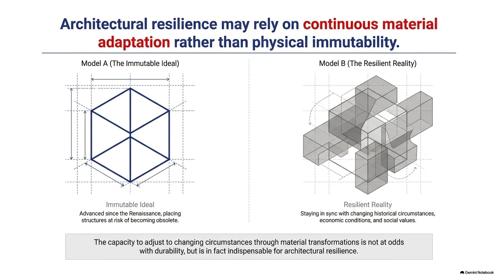
The same deck + the UNIPG theme:#27348B, #E30613, #8D8F95, #E8E8E8, Roboto, a blue rule. Same words.
“Elegant, institutional, blue” gives a different blue every time. #27348B, Roboto gives the same one. Your conference’s codes are in its template (.potx, .sty), its website CSS (Inspect), or its logo .svg (fill="#…").
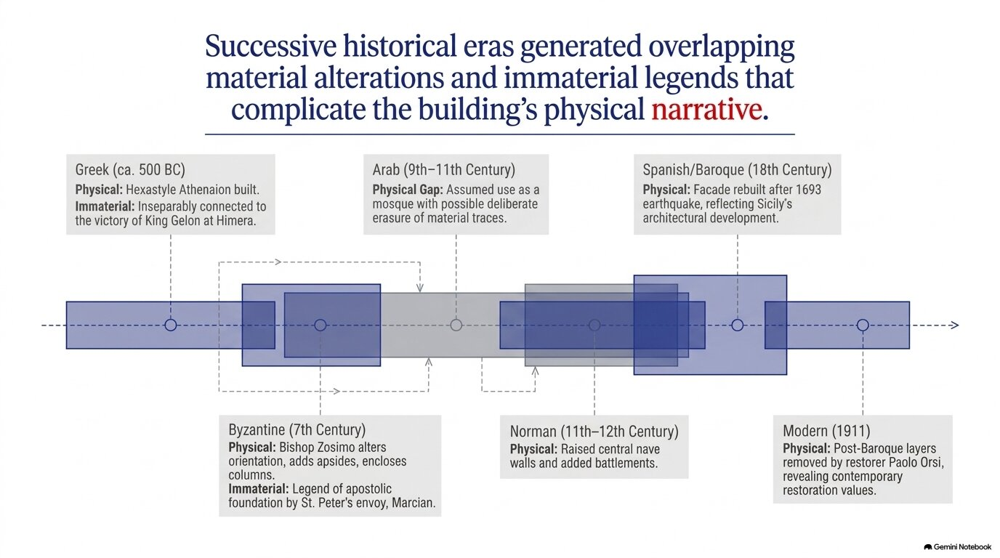
Slide 4 of the same deckSlides 1, 2, 3, 5, 6, 7: blue sans-serif titles, one red word.
Slide 4: serif, black title, as before the theme. The theme did not reach it.
Also: grey boxes in the top-right corner, where we asked for empty.
Fix: Rivedi on slide 4 alone, same instruction. One slide, two minutes.
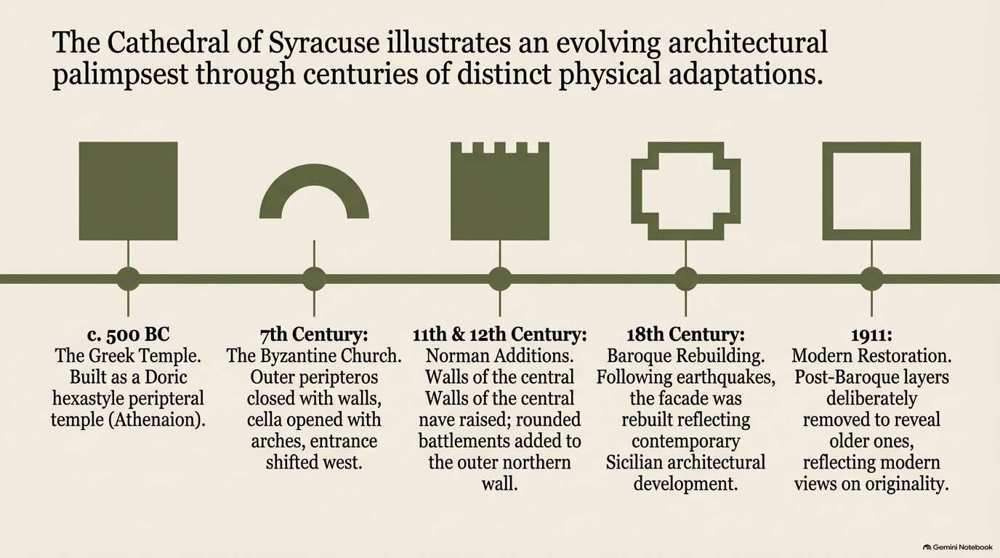
Generated slides are images (PNG, 1376×768), even in the .pptx download: seven pictures, no text boxes. The text is drawn, not typed.
Look at the third column: “Walls of the central Walls of the central nave raised”.
No spell-checker, no copy-paste, no search. You read every slide yourself, or nobody does.
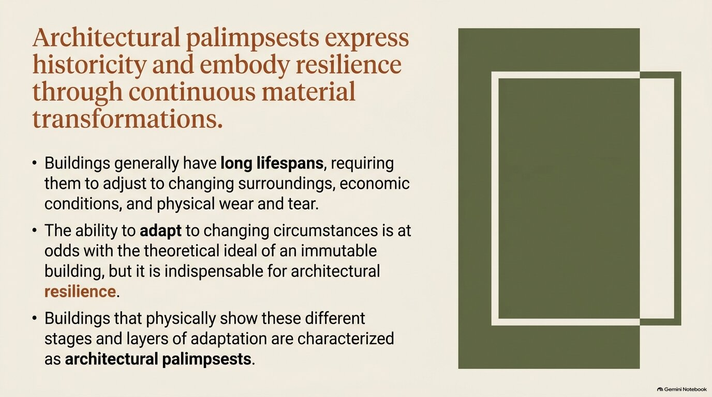
Before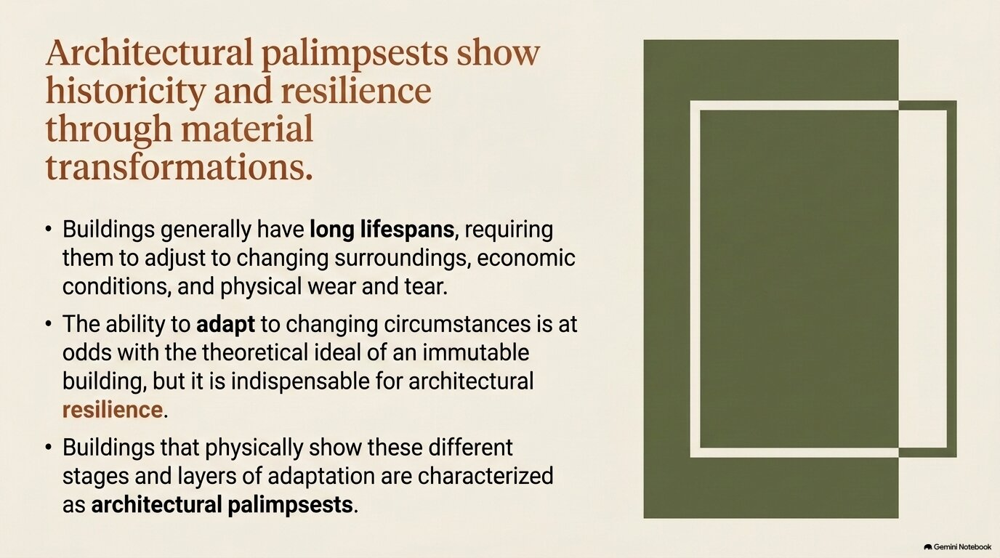
After: “Shorten the title to at most 10 words, keeping its meaning. Keep layout, colours and text exactly as they are.”Open the deck → Rivedi → click a slide → write one instruction → Genera presentazione rivista. It makes a copy (“(2)”), the original stays. About 2 minutes, and it does not use your daily three.
Rivedi is good for
Rivedi does not read the sources
| Question | Where it usually shows up | |
|---|---|---|
| 1 | Is there a picture of a real place or person the tool made up? | deck A |
| 2 | Is there a number or date you cannot find in the article? | deck A |
| 3 | Is a title a topic instead of a claim? | anywhere, even deck 1 |
| 4 | Does a verb go stronger than the text: suggests → proves? | deck A, sometimes deck 1 |
| 5 | Did the theme hold on every slide, or only on the first? | deck 2 |
Point 4 is the one that matters in research. Look at the verbs.
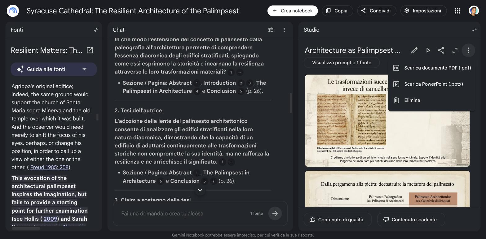
Each slide arrives as one picture: no text boxes. You edit around it, not inside it.
The watermark. Every slide carries a small Gemini Notebook badge bottom right, and the images carry SynthID, an invisible watermark.
Removing the badge is cosmetic. Declaring the use is not optional: see the last slide.
Materials, slides and example decks: niccolosalvini.github.io/unipg_ai_workshop. When you use it for real: declare it. “Slides drafted with Gemini Notebook from the author’s article, checked and edited by the author.” Generated images carry a visible and an invisible watermark.
Lab 3 · From paper to slides · UNIPG